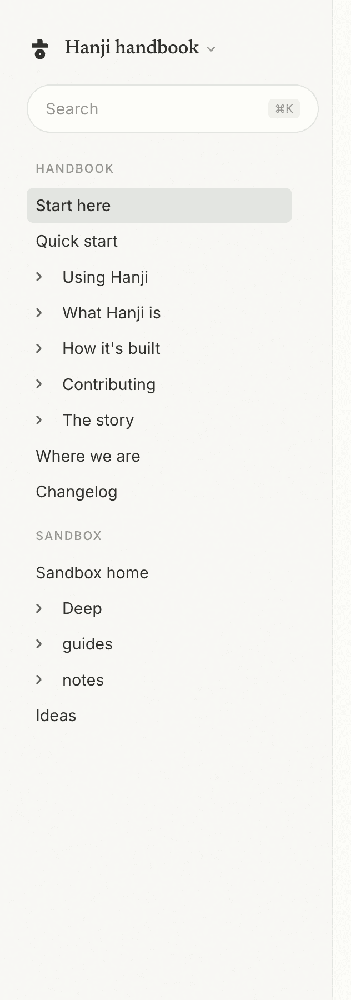
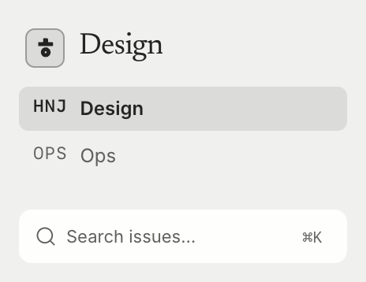

Hanji
HanjiMounts
A mount is one git repository, or one folder inside it, brought into Hanji's tree. You can have many. Together they form the single knowledge base that people and agents read.

Adding one
An empty workspace offers this right on its front page: mount a folder or clone a repository, no terminal involved. The welcome screen can connect your existing content, or prepare new local folders when you choose Start fresh. Its import path asks separately for Document pages, a Plan tracker and Think canvases. More folders can be added under Settings, Tools (below), or from the terminal. The CLI is the explicit path, and the only one with the full set of knobs:
pnpm hanji add-mount <name> <repoUrl> <mountPath> [subpath] [--suggest] [--local] [--kind pages|work|think]
nameis how you refer to the mount, and it is the token scope that grants access to it.repoUrlis any git URL Hanji can clone: an SSH remote, an HTTPS remote, or a local path.mountPathis where it lives in the tree, the first segment of every page's address.subpathis optional. Give it to mount only a folder of the repo, so the rest of the repository stays out of the knowledge base.--localmounts a folder on this machine in place: Hanji indexes its files where they are, and a save commits there without pushing. Hanji stores the folder's absolute path, so.works.--kindsets the mount's kind by hand; see Kinds of mount below.
# a whole repo
pnpm hanji add-mount notes git@github.com:you/notes.git notes
# only the docs/ folder of a larger repo
pnpm hanji add-mount handbook git@github.com:you/product.git handbook docs
An Open Knowledge Format bundle mounts like any other repository, because that is all it is: Markdown concept documents on git, each with a type in its frontmatter. Hanji indexes every concept, keeps its frontmatter byte-for-byte, and serves the bundle to people and agents like the rest of your tree. Nothing to configure.
Kinds of mount
Each mount has a kind, read from its files when you add it, and add-mount prints it:
- pages holds Markdown pages: everything above, and every mount added before kinds existed.
- work holds a tracker for Hanji Plan. Hanji knows it by its tracker file,
workspace.ymlat the root, with aprefix:line. - think holds boards for Hanji Think. Each first-level folder that holds a
board.mdwith Think'sidandversion, and anodes/folder beside it, is one board, and Think serves it at/b/<mountPath>/<folder>.
A docs page that happens to be called board.md stays a page. --kind pages, --kind work or --kind think sets the kind by hand.
A mount added before kinds existed, or added by repository URL, is pages. To change it, remove the mount and add it again, with --kind when detection cannot see the kind.
Plan and think mounts are folders on this machine: add them with --local. Each product pulls its own folder, so a sync never resets a tracker commit that is still waiting to be pushed or a board checkpoint that stays on this machine. A workspace can register several trackers, each with a prefix of its own; a second tracker whose prefix is already registered is refused.
With several trackers, Hanji Plan serves them all: its rail lists the trackers you may view, an address names one by its prefix after the route word (/v/HNJ/my-open, /okr/OPS), an issue's address names it by its key (/i/OPS-12), and an address with no prefix opens the first tracker in the order Settings lists the mounts (for a person who may not view it, the first one they may view). Adding a tracker keeps the order the mounts had, so the first stays first. Each tracker keeps its own people and grants: a person sees the trackers whose work mount they may view and files into the ones they may edit, from Plan, from a page in Document or from a sticky in Think, each of which asks which tracker when there are two or more. The conductor's settings are set on the first tracker's Workspace settings; its tracker CLI acts on that tracker, and its tools reach every tracker the person may view or edit. A tracker folder that is not one of the workspace's work mounts starts no agent session in it.

A tracker or a boards folder is added from Settings, under Tools, and a second tracker with Add another tracker… under Plan's row (an existing tracker folder, or a new one): turning Hanji Plan or Hanji Think on asks for the folder, an existing one or a new one made for you, and registers it as the mount. Turning a tool off keeps the mount, its folder and who can see it; turning it on again asks nothing. The CLI does the same with add-mount and tools.
A work or think mount for a tool that is off stays registered and keeps its people and rules; Mount access tags it "Plan is off" with the way to Tools, and add-mount says so. While a tool is off, every product shows a reference into it as plain text and offers no way into it: no issue link, Cited by link or issue action with Plan off, no page link or Docs with Document off, no board link with Think off. A Plan or Think you run by hand for such a workspace serves anyway and says at start that its tool is off.
Document lists, searches and syncs pages mounts only: a tracker's issue files and a board's node files never show in the sidebar, search or the digest. Activity shows them as the issues and boards they are, to a reader of the work or think mount.
A save, upload, move, delete, reorder or proposal into a work or think mount is refused: those files belong to Plan and Think, which check them before they write.
pnpm hanji add-mount work ~/trackers/design work --local # mounted work at /work as work (local)
A folder that holds a single board at its root is refused, because a board is addressed by its folder: move the board into a folder of its own first (git mv board.md nodes assets crit/), commit, and add the mount again.
Keeping in sync
Hanji reads from a local clone and serves from a local index. To pull the latest from a mount's remote and reindex, sync.
pnpm hanji sync # fetch every pages mount and reindex what changed
pnpm hanji rebuild # throw the index away and rebuild it from the clones
pnpm hanji list # show every mount, its kind, and how many pages each pages mount holds
rebuild is safe to run any time. The index is a cache, so nothing you care about lives only there. If it ever looks wrong, rebuild it and it is correct again.
Changes arrive on their own
Manual sync works, but a knowledge base should not need asking. Two mechanisms, both optional, both feeding the same sync:
Push-to-sync. Set HANJI_WEBHOOK_SECRET in the web front's environment, then add a webhook to the repository (GitHub: repo → Settings → Webhooks): payload URL https://<your-hanji>/api/webhook/git, content type JSON, the same secret. Every push to the mount's branch syncs the matching mount seconds later. Hanji answers deliveries immediately and does the git work in the background, so a slow clone never trips the sender's timeout. Deliveries are verified against the secret's signature; without the secret set, the endpoint does not exist.
The poll loop. Set HANJI_POLL_SECONDS=300 and the web front syncs every pages mount on that interval. This is the mechanism for a tailnet, which a webhook cannot reach from the outside - see On your tailnet - and it also covers local mounts, picking up edits made outside Hanji entirely. A slow sync skips a beat, so syncs never stack; a failing one logs and tries again next round.
The front syncs itself. The web app freshens local mounts the moment attention arrives: switching back to the tab triggers a sync, and a quiet interval keeps checking while a page is open. A sync that finds nothing costs milliseconds - Hanji stats the tree and stops when nothing moved - so by the time you are looking, the page already shows what your agent just wrote. The byline says so: a small "checked just now" affix, with "sync failed - retry" when a mount cannot be read.
Any mix works: webhooks where the network allows, polling where it doesn't, pnpm hanji sync whenever you want it now.
Direct and suggest mounts
By default a mount is direct: editors' edits in the front (the owner's, and anyone granted read+write) are written straight to git as commits. Pass --suggest and the mount becomes suggest-only: direct writes are refused, and every change has to arrive as a proposal instead.
Suggest mounts are for repositories where nothing should change without review, even from the owner. On a suggest mount Update reads Propose for everyone, editors and the owner included, agents alike, and every change waits in the same review card. See Proposals.
Once your mounts are in place, read Reading and writing to use the front, or Agents to connect a coding agent.